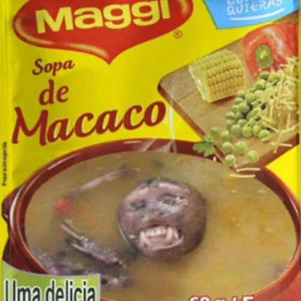

Sopa sabor macaco 🦧
RECEITA:
Origem: receita ancestral de familia
Rendimento: 4 porção
Tempo: 5 Horas
Ingredientes:
- 1 macaco de médio porte
- 2 litros de água
- 1 cebola cortada grosseiramente, no ódio
- 3 dentes de alho esmagados com a lateral da faca
- 1 folha de louro
- Sal a gosto
- Pimenta-do-reino moída na hora
- 1 batata só pra dizer que tem legumes
- Cheiro-verde pra fingir sofisticação
Modo de Preparo:
- Em uma panela grande, coloque o macaco inteiro, sem limpar mesmo, porque tradição é tradição.
- Cubra com água e leve ao fogo alto até começar a ferver e levantar aquela espuma.
- Retire a espuma com uma colher.
- Acrescente a cebola, o alho, a batata, o louro e os temperos.
- Abaixe o fogo e deixe cozinhar por 2 horas ou até alguém reclamar do cheiro.
- Ajuste o sal, finalize com cheiro-verde e desligue o fogo.
Como Servir:
- Sirva bem quente
- Acompanhe com farinha, arroz branco
Voltar para o inicio